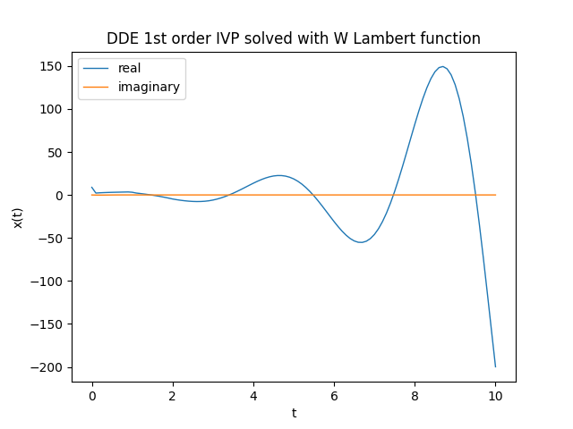
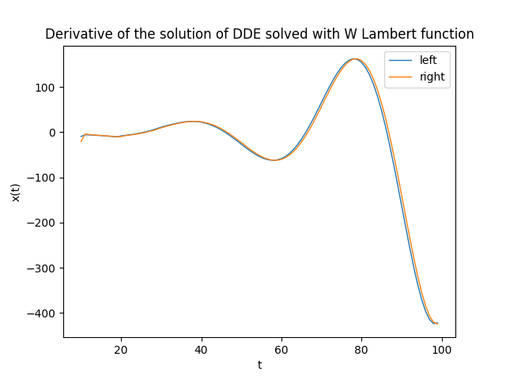

A method to solve first-order time delayed differential equation using Lambert W function
This post was inspired by the paper The Lambert W Function Approach to Time Delay Systems and the LambertW_DDE Toolbox and from a math lesson by Prof. Fausta D'Acunzo from Preparation 2.0 about the Lambert W function. The post shows how to solve a particular type of differential equation with delay (abbreviated DDE for Delay Differential Equations) with initial values be given using the Lambert W function; the post does not deal into the underlying mathematics for which we refer to the paper cited above and focuses instead on the implementation in Python 3.x with SciPy of the numerical solution of the scalar case analyzed on the paper itself.
The "DDE scalar case" problem
Time Delayed Systems (abbreviated TDS) are systems in which there is a significant time delay between the application of input to the system and the resulting output, and this delay may be inherent or deliberately introduced. A TDS can be modeled with delayed differential equations. This section discusses the case of a scalar coefficient DDE; after formal definitions of the problem and the solution, which makes use of Lambert W function, it is shown the implementation of a Python program with SciPy that realizes the solution proposed by the paper. Finally a verification phase shows the correctness of the solution within the acceptable approximation limits.
The differential problem and its solution
Let the following system be given that contains a DDE: $$ \begin{equation} \begin{cases} x'(t) = a x(t) + a_d x(t-h) + b u(t) & t > 0 \\ x(t) = g(t) & t \in [-h, 0) \\ x(t) = x_0 & t = 0 \end{cases} \end{equation} $$ where:
- $x(t)$ is the unknown function
- $a$, $a_d$ e $b$ are scalar constants $\in \rm I\!R$
- $h$ is a constant $\in \rm I\!R^+$, therefore strictly positive and represents the delay
- $g(t)$ is a function that provides the values of $x(t)$ when the time variable $t$ is included in the interval $[-h, 0)$
- $x(0) = x_0$ is the Cauchy initial condition.

Formal solution provided by the paper, specifically in section 2.3 on page 2.
Formula for calculating $s_k$, specifically in section 2.2 on page 2.
where $W_k$ is the Lambert function W of index $k$.
The Lambert function W is a family of functions defined in the complex field obtained as the index $k$ varies.
For further information see Lambert W function on Wikipedia.
Implementing in Python with SciPy
Two notes are necessary before going into the implementation:
- the function W cannot be expressed in terms of elementary functions, therefore we will use the numerical implementation
scipy.special.lambertwprovided by SciPy; -
for the calculation of integrals we will always use SciPy and in particular
scipy.integrate.quadkeeping in mind however that we operate in the complex field (since the various $s_k$ are complex because they are calculated with $W_k$) and then we must be careful to integrate separately the real part from the imaginary part becausescipy.integrate.quaddoes not support integration in the complex field.
import numpy as np
from scipy import real, imag
from scipy.integrate import quad
from scipy.special import lambertw
import matplotlib.pyplot as plt
matplotlib.pyplot for plotting graphs.In terms of the naming convention used for variable names, the following two rules were followed:
-
the names of the mathematical objects in the solution proposed by the paper (see figures above) have been implemented with Python variables of the same name;
for example the constants $a$, $a_d$ and $b$ correspond to the Python variables
a,adandb, the unknown function $x(t)$ is; the Python functiondef x(t):and so on; -
regarding the names of Python variables that do not have a direct correspondence with the names of mathematical objects
we chose to use deliberately long names to make their semantics clear;
for example
k_rangeis the range in which the index $k$ of the function W varies (to be intended from-k_rangeto+k_range) or the variableint_for_ckiis the value of the integral that is involved in the calculation of $C_k^I$ and so on.
t_begin=0.
t_end=10.
t_nsamples=101
t_space, t_step = np.linspace(t_begin, t_end, t_nsamples, retstep=True)
k_range=9
a = 0.5
ad = -2.5
b = 1.75
h = 1.
g = lambda t : 1. - 0.1 * t
u = lambda t : 0.2 * t
x0 = 1.5- time $t$ varies from $0$ to $10$ with $101$ sampling (hence discretization step equal to $0.1$);
- the index $k$ of the function W in theory varies from $-\infty$ to $+\infty$, in this example we restrict the variation from $-9$ to $+9$.
- $a$, $a_d$ and $b$ are three arbitrarily chosen coefficients; the experimenter can freely change them;
- $g(t)$, as mentioned above, gives the values of $x(t)$ before time $0$; it too was arbitrarily defined at $g(t) = 1 - 0.1 t$.
- $u(t)$ is also arbitrary and in this example is defined as follows: $u(t)=0.2 t$
- the Cauchy condition is arbitrarily assigned to $x_0=1.5$.
sk_fn = lambda k : (1./h) * lambertw(ad * h * np.exp(-a * h), k) + a
SK = [sk_fn(k) for k in range (-k_range, k_range+1)]
SK contains the list of all the various $s_k$ precomputed once and for all.
The implementation of $x(t)$ in Python follows:def x(t):
def integrand_for_cki(t_, sk):
return np.exp(-sk * t_) * g(t_ - h)
def integral_for_cki(sk):
def real_func(t_, sk):
return np.real(integrand_for_cki(t_, sk))
def imag_func(t_, sk):
return np.imag(integrand_for_cki(t_, sk))
real_integral = quad(real_func, 0., h, args=(sk))
imag_integral = quad(imag_func, 0., h, args=(sk))
return real_integral[0] + 1.j*imag_integral[0]
def integrand_for_x_t(eta):
tot = 0.
for k in range (-k_range, k_range+1):
sk = SK[k + k_range]
ck_denom = (1. + ad * h * np.exp(-sk * h))
ckn = 1. / ck_denom
tot += np.exp(sk * (t - eta)) * ckn * b * u(eta)
return tot
def integral_for_x_t():
def real_func(eta):
return np.real(integrand_for_x_t(eta))
def imag_func(eta):
return np.imag(integrand_for_x_t(eta))
real_integral = quad(real_func, 0., t)
imag_integral = quad(imag_func, 0., t)
return real_integral[0] + 1.j*imag_integral[0]
tot = 0.
for k in range (-k_range, k_range+1):
sk = SK[k + k_range]
int_for_cki = integral_for_cki(sk)
ck_denom = (1. + ad * h * np.exp(-sk * h))
cki = (x0 + ad * np.exp(-sk * h) * int_for_cki) / ck_denom
tot += np.exp(sk * t) * cki
tot += integral_for_x_t()
return totintegrand_for_cki and integral_for_cki to respectively realize the integrand function
and the integral involved in the computation of $C_k^I$ with the separation of the integration of the real part from the imaginary part.
The same is true for the nested functions integrand_for_x_t and integral_for_x_t written with the same logic
to realize respectively the integrand function and the integral involved in the calculation of $x(t)$.Note: in the writing of the code it has been privileged the correspondence and the fidelity between the code and the mathematics described on the paper at the expense of some missed optimization and some principles of good programming deliberately left out to make the code more readable.
To perform the calculation of the function $x(t)$ in the interval $t \in [0, 10]$ this line of code is sufficient:
x_num_sol=[x(t) for t in t_space]x_num_sol is a list containing the discretized values of $x(t)$ in the given interval.
Note that the elements of the list are complex numbers with the imaginary part very close to $0j$;
should be equal to $0j$ but is not because of the approximations.To graph the real part and the imaginary part (just to see that it is around $0$) run the following code:
plt.figure()
plt.plot(t_space, np.real(x_num_sol), linewidth=1, label='real')
plt.plot(t_space, np.imag(x_num_sol), linewidth=1, label='imaginary')
plt.title('DDE 1st order IVP solved with W Lambert function')
plt.xlabel('t')
plt.ylabel('x(t)')
plt.legend()
plt.show()
Graph of the function $x(t)$, solution of the equation, calculated numerically
Verification
Not having an analytical solution to compare, the verification is not so immediate and requires a double step: one calculates separately the first member and the second member of the DDE and then compares them on the same graph: if the calculations and implementation are correct, the two curves will be practically superimposed. Of course the imaginary part, being practically $0$, is not taken into account in the verification.
-
The first member (called left), i.e., the $x'(t)$, can be computed by approximating $x'(t)$ with $\frac{{\Delta x(t)}}{{\Delta t}}$
and then doing the difference between two adjacent values of the
x_num_solarray divided by the time discretization step. -
The second member (called right) is calculated by running the formula replacing the formal values with the actual values of the coefficients and the function $u(t)$
while as for $x(t)$ and $x(t-h)$ they are replaced with the corresponding values of the array
x_num_sol. having the care to skip the values of $t
num_of_cells_for_h_time = int(h/t_step)
x_num_grad_left = [np.real((x_num_sol[i+1] - x_num_sol[i])) / t_step
for i in range(num_of_cells_for_h_time, t_nsamples-1)]
x_num_grad_right = [
a * np.real(x_num_sol[i]) +
ad * np.real(x_num_sol[i - num_of_cells_for_h_time])
+ b * u(t_space[i])
for i in range(num_of_cells_for_h_time, t_nsamples-1)]plt.figure()
plt.plot(range(num_of_cells_for_h_time, t_nsamples-1), x_num_grad_left, linewidth=1, label='left')
plt.plot(range(num_of_cells_for_h_time, t_nsamples-1), x_num_grad_right, linewidth=1, label='right')
plt.title('Derivative of the solution of DDE solved with W Lambert function')
plt.xlabel('t')
plt.ylabel('x(t)')
plt.legend()
plt.show()]
Graph of the derivative $x'(t)$ calculated numerically
by performing separate calculations on the left and right members of the equation
by performing separate calculations on the left and right members of the equation
Citations
Yi, S. , Nelson, P.W. , and Ulsoy, A.G. ,
2007a, "Survey on analysis of time delayed systems via the Lambert w function,"
Dynamics of Continuous, Discrete and Impulsive Systems (Series A) (in press).Yi, S., Duan, S., Nelson, P., and Ulsoy, A. G.,
2012, "The Lambert W Function Approach to Time Delay Systems and the LambertW_DDE Toolbox,"
IFAC Workshop on Time Delay Systems, Boston, MA.Download of the complete code
The complete code is available at GitHub.
These materials are distributed under MIT license; feel free to use, share, fork and adapt these materials as you see fit.
Also please feel free to submit pull-requests and bug-reports to this GitHub repository or contact me on my social media channels available on the top right corner of this page.